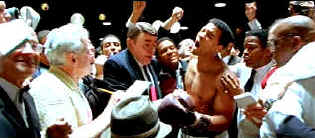

| Ali/ B, A- |
| Columbia/2001/157/ANA 2.35 |
Too bad Ali doesn't float like a butterfly
and sting like a bee. In fact it moves at a leaden pace, more like a
fighter whose seen better days and is carrying too much around the middle.
It's not easy to take on an imposing and controversial public figure in a
biopic covering a significant number of years; but making great movies
isn't supposed to be easy. Ali fails to capture an definitive sense
of time producing an uncomfortable sense of confusion.
 |
|
Champion of the world. ©Columbia
|
There's a moment in the film; it's the best
moment in the film; and it probably runs only fifteen seconds. During a
break in a live television interview, Cosell takes Ali aside and basically
says they are out to get you Mohammed, they're going to take you down on
the draft dodging indictment because of what you represent. More intimate
moments like that one might have shined a special light on the characters.
It made you feel you were let into the secret world behind the paste up of
history that is presented for the majority of the film. The story by
Gregory Alan Howard has been turned into a screenplay by a tag-team of
writers including Eric Roth and Michael Mann and Steven J. Rivele and
Christopher Wilkinson. Maybe it's the multiple voices, but the script
fails to fight a convincing fight and lacks the focus necessary to capture
the championship belt.
Will Smith is truly splendid as Muhammad Ali and
is probably the great strength of the movie. He is thoroughly convincing
as this great public figure. You never have a feeling that he's simply
trying to do an imitation of Muhammad. You feel his force of weight as an
individual. There's a sense of mystery to this Ali, part from
Smith's internal interpretation and part from a script that isn't very
judgmental.
Jon Voight is fine as television sports
commentator Howard Cosell, however, the make-up mask they put him in looks
like a mask. His mask is far worse than the standard rug that Cosell wore
in real life. It undermines the performance and even the film. Mario Van
Peebles is excellent as Malcolm X. He lends a weigh of authenticity the
supporting cast. Jamie Foxx is also excellent a Drew "Bundini"
Brown.
Mann chooses a strange looking palette for Ali.
It almost appears solarized. The high contrast look in a way, it isolates Ali
from the world around him and that's part of Mann's statement that Ali is
an individual. Yet, you never really get to know Ali the man in this film,
which is less than satisfying. You don't understand the motivations behind
his actions. The great courageous act of refusing to be inducted into the
Army; there's no clear cut reasoning behind and it saps significance fromt
he act.
Columbia's DVD transfer
of Ali preserves the artistic intent of the film very well. Colors
accurately replicate the unusual Mann palette. There's plenty of light
output to illuminate Ali and contrast range is outstanding. Darker
moments in the film and interior lighting is delivered with a nice range
of shadow detail. The picture remains free of any undue edginess. Black
level is very good. Overall color saturation is outstanding. The ring
scenes deliver a high impact sonic punch of leather connecting with
skin. |
|
|
|

Starship Troopers/A-,A

A great, modern, war movie that skewers genre conventions. Director
Paul Verhoeven controls the Scifi flick with a perfect flight plan.

Selections from the Feature
Archive include articles on Akira Kurosawa, Frank Darabont, Blonde Bimbos, Hollywood Street Gangs, or Vietnam: The Hollywood Pariah, and many
more....
Body Parts

Hollywood's long fascination with parts of the body is explored
piece by piece.

 Have you visited
Home Theater
Talk lately? One of the friendliest places on the Net for Home
Theater and DVD discussion, you can get help for installation problems or
simply share your opinions with other Vidiots. Have you visited
Home Theater
Talk lately? One of the friendliest places on the Net for Home
Theater and DVD discussion, you can get help for installation problems or
simply share your opinions with other Vidiots.

ISF Monitor
Calibrations in the Tristate New York area. Lots of hardware
info and frequent hardware peaks from video expert Kevin Miller. They may
be judgmental, but that's the point, isn't it. Lots of DVD reviews plus
news and more.

DVD Reviews and more.
The credo behind DVD Angle is "we cater to no one, and we call it as
we see it."

Everything you wanted to know about animation on DVD. Reviews,
news, forum. Webmaster Chris Beveridge.
|